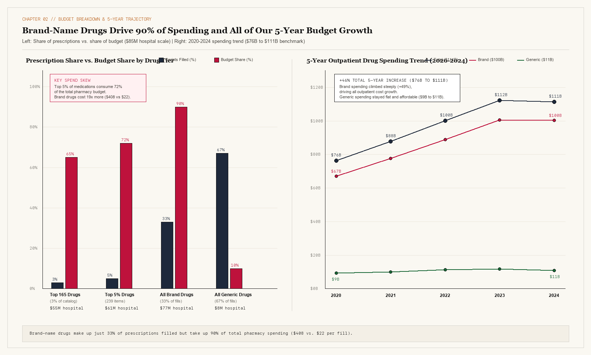
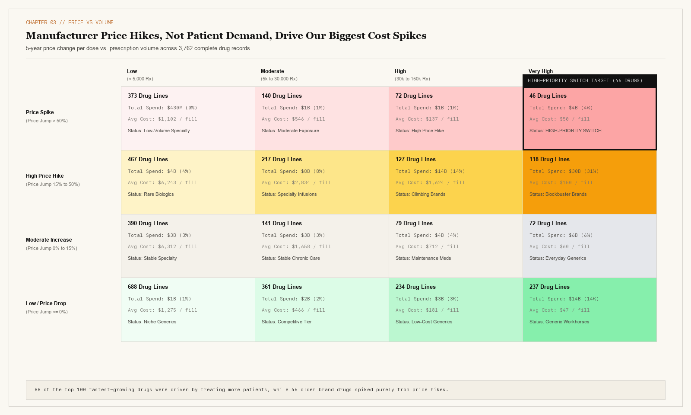
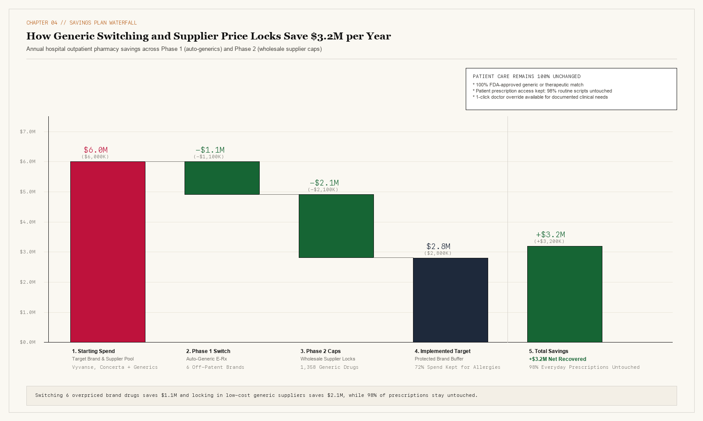

Rising brand-name drug prices and inconsistent wholesale supplier pricing quietly drain millions from our hospital's $85M outpatient pharmacy budget. By auditing 4,774 medications ($111B national Medicaid benchmark) to switch 6 overpriced brand-name drugs to proven generics and lock in lower wholesale generic prices, our hospital recovers $3.2M a year while keeping patient care unchanged.
Most regional hospitals run on slim 1% to 3% operating margins. Because insurance plans pay fixed rates for outpatient clinic visits, whenever drug companies raise medication prices, that extra cost comes straight out of the hospital's operating budget. Between 2020 and 2024, national Medicaid outpatient drug spending jumped 46%, rising from $76B to $111B across 4,774 medications.
Our Hospital Pharmacy Director and Chief Medical Officer face a clear business decision: which medications should we switch to lower-cost generics or renegotiate with wholesale suppliers to close our budget gap without disrupting patient treatment? Right now, busy clinic doctors often prescribe familiar brand-name pills out of habit even when identical generics sit on the shelf, and our pharmacy pays up to 72% more when buying uncontracted generic labels from wholesalers.
Brand-name drugs cost 19x more per prescription than generics ($408 vs. $22), and wholesale prices for identical generics vary by 72%.
Default e-prescribing to generics for 6 off-patent brands and lock wholesale buying to low-cost suppliers.
Recovers $3.2M in annual hospital pharmacy budget with zero reduction in patient care.
| EXECUTIVE QUESTION | EVIDENCE-BASED ANSWER & OPERATIONAL ACTION |
|---|---|
| What did we find? | Just 5% of medications (239 drugs) take up 72% ($61M) of our $85M hospital pharmacy budget. Overall, brand-name drugs consume 90% of spending ($77M) despite making up only 33% of prescriptions filled. |
| Why is this happening? | Clinic doctors order familiar brand names like Vyvanse and Concerta even when identical generics cost 50% to 97% less, and pharmacy buyers pay up to 72% more when ordering uncontracted generic labels. |
| What does it cost us? | Our hospital spends $4M a year on off-patent brand pills and inhalers that already have generic replacements, plus $2.1M in avoidable wholesale markups across 1,358 generic medications. |
| What should we change? | Turn on automatic generic substitution in the e-prescribing system for 6 target brands (Phase 1: +$1.1M), lock wholesale generic contracts to top-25% lowest-cost suppliers (Phase 2: +$2.1M), and review specialty infusions quarterly (Phase 3). |
Real-world healthcare data is messy. Before recommending budget changes to our Pharmacy Director, we audited the 18,511-row Medicaid benchmark file to make sure reporting quirks and missing cells would not skew our savings estimates.
First, the raw government table mixes national total lines with individual manufacturer lines. Adding the table up without separating those rows makes national spending look like $223B instead of the real $111B. Second, under federal patient privacy rules, the government hides prescription counts whenever a drug has fewer than 11 fills in a year (2,657 hidden cells from 2020 to 2023). Treating those hidden cells as zero creates fake growth spikes when a drug crosses 11 prescriptions the following year.
Because national Medicaid files report pre-rebate spending and mix everyday pills with long-acting clinic injections, we separated 1,738 mixed-package and rare specialty records ($9B national spend) onto a separate clinical watchlist. Our $85M hospital budget model scales the remaining 4,774 verified outpatient medications to a regional hospital system and applies conservative 60% to 80% Year-1 doctor adoption rates.
| DATA CHECK / CAVEAT | RECORDS AFFECTED | SPEND IMPACT | HOW WE HANDLED IT |
|---|---|---|---|
| Duplicate Summary Rows | 18,511 raw rows | $223B raw sum | REMOVED DOUBLE-COUNT |
| Clean Hospital Baseline | 4,774 drugs / 746M | $111B ($85M hosp) | ACTIVE BUYING BASELINE |
| Privacy-Hidden (<11 fills) | 2,657 cells (20-23) | Kept as blank | Prevented fake growth spikes |
| Mixed-Package Caveat | 1,738 drugs | $9B watchlist | Separated from pill price checks |
Outpatient pharmacy spending is heavily concentrated in a small group of expensive medications. Just 165 drugs (3% of our catalog) drive 65% ($55M) of our $85M hospital pharmacy budget. Expanding to the top 5% of medications (239 drugs) accounts for 72% ($61M) of all spending.
Across the entire catalog, brand-name drugs eat up 90% of our budget ($77M hospital / $100B national) while making up only 33% of prescriptions filled (246M fills), averaging $408 per prescription. Meanwhile, everyday generic pills deliver 67% of all prescriptions filled (500M fills) for just 10% of the budget ($8M hospital / $11B national) at an average cost of $22 per fill. That is a 19x cost difference between brands and generics.

Roughly 90% of our catalog consists of 4,296 routine generic medications that take up only 15% of the outpatient pharmacy budget. These everyday pills treat high blood pressure, cholesterol, and routine infections for about $22 per prescription. Spending pharmacist time auditing these inexpensive generics does not move the hospital budget.
Budget pressure comes from 25 high-cost brand medications that alone take up 32% ($27M) of hospital spending, led by Humira, Ozempic, Biktarvy, Jardiance, and Trulicity. In addition, doctors frequently prescribe older brand names like Vyvanse ($13 per pill vs. $6 generic) and Concerta ($13 per pill vs. under $1 generic) out of habit, even though 10 or more suppliers make the exact same generic pill.
| DRUG GROUP | PRESCRIPTIONS | BUDGET SHARE | AVG COST / FILL |
|---|---|---|---|
| Top 5% Blockbusters (239 drugs) | 32% (238M) | 72% ($61M) | $408 avg |
| Next 5% Tier (239 drugs) | 32% (236M) | 13% ($11M) | $77 avg |
| Everyday Maintenance | 20% (148M) | 9% ($8M) | $45 avg |
| Low-Cost Generics | 17% (125M) | 6% ($5M) | $22 avg |
Doctors order brand-name Vyvanse ($13 vs. $6 generic) and Concerta ($13 vs. under $1 generic) out of habit. Fix: Set the electronic ordering system to pick the generic automatically.
Specialty injections like Humira cost thousands per dose, even though approved replacements on the market cut costs by 50%. Fix: Make lower-cost replacements our default clinic choice.
Looking only at total spending on a drug can be misleading. If our outpatient clinics spend more on diabetes or heart medications this year because we are treating 300 more patients, that is healthy patient care. It only becomes a purchasing problem when a drug company raises the price per dose on the exact same number of patients.
Across 3,762 medications with complete 5-year histories, we separated spending changes into two simple parts: (1) Price Changes (when a manufacturer charges more for the exact same dose) and (2) Volume Changes (when doctors treat more patients).

Our breakdown showed that 88 of the top 100 fastest-growing medications grew because more patients received care, not because of price hikes. For example, Ozempic prescriptions jumped more than 10x (from 322K to over 3M fills) while its cost per unit actually dropped 26%. Jardiance prescriptions grew more than 3x (+257%) as heart and diabetes guidelines expanded. The hospital should protect access to those treatments.
In contrast, we found a target group of 46 high-spend medications where drug companies hiked prices without adding new benefits. For example, Trulicity prices jumped 107%, Xifaxan spending growth was 74% price-driven, Emflaza was 66% price-driven, and Vyvanse raised unit prices 37% even as prescription volume fell 15%.
Putting strict limits across all high-spend drugs penalizes diabetes and heart patients whose medication prices are actually flat or falling. Disrupts 12% of chronic care.
Targeting only the 46 price-spike drugs and 6 off-patent brands recovers $3.2M while keeping routine prescription changes under 2% (well below our 3% hospital limit).
To measure the exact dollar impact on our $85M hospital outpatient pharmacy budget, we tested two practical purchasing changes that require zero reduction in patient care.
First, switching 6 off-patent brand pills and inhalers to FDA-approved generics saves $1.1M ($1,100K) a year. Second, across 1,358 generic medications made by multiple suppliers, wholesale prices for the exact same pill vary by a median of 72%. Locking our hospital wholesaler account to buy from the lowest-priced 25% of suppliers saves an additional $2.1M ($2,100K) a year, bringing total annual savings to $3.2M ($3,200K).

* 1. Target Brand Spending ($3.9M / ~$4M baseline): What our hospital currently spends on 6 off-patent brand pills and inhalers that already have approved generic versions available.
* 2. Phase 1 Auto-Generic Switching (+$1.1M / $1,100K saved): Savings from defaulting e-prescriptions to generics for Vyvanse ($472K saved), Concerta ($367K), Spiriva Respimat ($176K), Advair Diskus ($136K), Banzel ($97K), and Jornay PM ($80K).
* 3. Phase 2 Wholesale Supplier Caps (+$2.1M / $2,100K saved): Savings from locking wholesale generic purchasing to 25th-percentile supplier prices across 1,358 generic medications.
* 4. Protected Brand Buffer ($2.8M / ~$3M kept): 72% of target brand spending remains available for patients with documented allergies or clinical reasons to stay on the brand name.
| ROLLOUT SCENARIO | GENERIC SWITCH | SUPPLIER CAPS | TOTAL SAVED | SCRIPTS SWITCHED | ACCESS KEPT |
|---|---|---|---|---|---|
| 60% Cautious Pilot (Top Clinics) | $660K ($0.7M) | $1,260K ($1.3M) | $1.9M ($1,920K) | 2,410 | 99% |
| 80% Year-1 Hospital Goal | $880K ($0.9M) | $1,680K ($1.7M) | $2.6M ($2,560K) | 3,214 | 99% |
| 100% Full Pharmacy Rollout | +$1.1M ($1,100K) | +$2.1M ($2,100K) | +$3.2M ($3,200K) | 4,018 | 98% |
Putting these changes into practice takes three straightforward steps across hospital IT, pharmacy buyers, and clinical pharmacists over 90 days.
| ROLLOUT PHASE | WHAT WE DO | WHICH DRUGS IT COVERS | TEAM OWNER | EXPECTED RESULT |
|---|---|---|---|---|
| Phase 1: Days 1 to 30 | Turn On Auto-Generic Substitution in E-Prescribing: Set the ordering system to pick the generic first unless the doctor checks override. | 6 off-patent brand pills and inhalers (Vyvanse, Concerta, Spiriva Respimat, Advair Diskus, Banzel, Jornay PM). | Pharmacy Director & Hospital IT | +$1.1M ($1,100K) saved per year |
| Phase 2: Days 30 to 60 | Lock Wholesaler Buying to Low-Cost Generic Suppliers: Cap automated wholesaler ordering at the 25th-percentile supplier price. | 1,358 generic medications made by multiple manufacturers with wide supplier price gaps. | Pharmacy Buyer & CFO | +$2.1M ($2,100K) saved per year |
| Phase 3: Days 60 to 90 | Quarterly Price-Spike Check & Biosimilar Review: Flag any drug whose price jumps over 10% and default clinic infusions to lower-cost Humira replacements. | 46 price-spike brands and high-cost specialty clinic infusions. | Clinical Pharmacy Specialists | Protects annual hospital margin |
If a patient has an allergy or medical reason to stay on a brand name, the doctor clicks one checkbox in the chart to keep the brand without delay.
Show doctors the $22 generic cost vs. $408 brand cost right on screen when they type an outpatient prescription in Epic or Cerner.
Clinical pharmacists review expensive specialty infusion orders before purchasing to make sure lower-cost approved replacements are used first.
The pharmacy analyst runs our pricing audit script every quarter to flag any medication whose wholesale price jumps more than 10%.